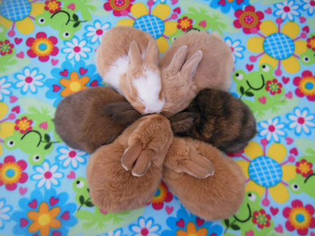

Bring some bunny into your heart and home!

The Rabbit Haven is a 501 c3 non-profit educational organization, a project of AVA. We are a member of the Bay Area Shelter Network, Northern Cal Rabbit rescue network, The Watsonville Task Force as well as a variety of other community groups. The Haven works with rabbit education and support groups, such as The House Rabbit Society, Harvest Home and many others. We work with a network of veterinarians who supply the Rabbit Haven with vital, up to date information. We are an all volunteer organization. We have no paid staff. The Rabbit Haven cares for about 100 rabbits at any time through our foster site networks. Our foster network is the core of our operations. The Organization is funded by individual donors and grants. We have no City, County State or Federal funding.
The Rabbit Haven rescues abandoned rabbits and accepts surrendered rabbits from the general public, from shelters and from other rescue organizations in the counties of Santa Cruz, Santa Clara, Sonoma, Sacramento, San Benito, Yolo, Contra Costa, and Monterey, and San Mateo. The Rabbit Haven works in the community, at schools, with shelters and with other education groups to provide education on rabbit care, feeding, grooming, medical, social and behavioral needs.